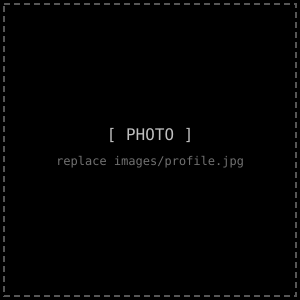

Bio

profile.jpg
Hi, I'm YOUR NAME — an artist who likes turning
ideas into images, objects, and scenes with a bit of retro flair.
Replace this paragraph with your real background,
influences, and what drives your work.
Artist Statement
My work explores [themes/subjects] through [medium/process].
Replace this with a short statement on why you make art,
what questions or ideas you keep returning to, and how
your process shapes the final piece.
Skills
Illustration [██████████████████░░] 90%
Painting [████████████████░░░░] 80%
Digital Art [███████████████░░░░░] 75%
Sculpture [██████████████░░░░░░] 70%
Photography [████████████████████] 100%
Curriculum Vitae
Education
20XX — Degree / Program, Institution Name
20XX — Degree / Program, Institution Name
Exhibitions
20XX — "Exhibition Title", Gallery Name, City
20XX — "Exhibition Title", Gallery Name, City
Awards
20XX — Award Name, Organization